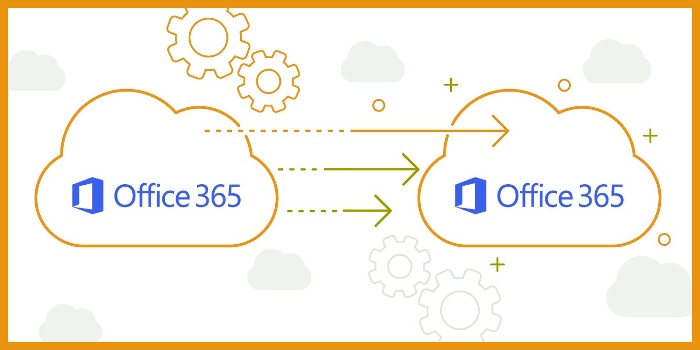
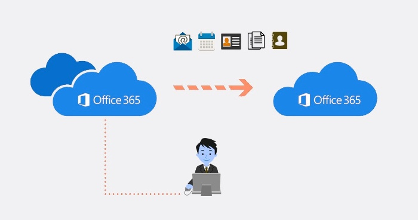

- The latest known antivirus signatures are in place.
- Email protection with protection from spam and antivirus software.
- Microsoft's trustworthy computing security policies.
Office 365 To Office 365 Migration- 5 Key Benefits To Know
Microsoft Office 365 is a cloud-based subscription service that offers users access to the latest versions of Microsoft Office applications. Office 365 also includes cloud-based storage, collaboration, and communication tools.
Organizations across companies are departing from traditional legacy email environments to Office 365 Office because of the rising popularity of online collaboration and storage solutions. Over 5 key advantages of migrating to Microsoft Office 365 are highlighted here to make your choice simpler.
1. Flexible working – work anywhere, anytime from any device
Your workers will no longer have to set up VPN connections in order to access company files from the workplace, turning Office 365 into a time- and energy-saving alternative for today's companies. By moving to the cloud, your staff can work from anywhere, provided only that they have an internet connection .

As a Microsoft data center maintains all the versions of files you're working with, there's a single central database. You can take a new file home, but another person in our office will see the most current version they worked with. Emailing different versions of the same Excel file between each other has gone the way of fax companies.
Allows your staff the ability to access current documents regardless of whether they're working flexibly.
2. Your business remains secure
Microsoft Office 365 includes several security features to protect your company's data from online interception. Applications are accessible using SSL / TLS encryption to ensure that unauthorized individuals cannot intercept the communication or file.
Professional security audits are conducted routinely by Microsoft. Having a robust incident response protocol in place, they are prepared to react swiftly to any suspicious activity. Microsoft Office 365 offers a number of enhanced security features including:
Protect confidential information by standardizing file extensions, encrypting stored information, etc.
3. Instant upgrades and access to new features
Microsoft is dedicated to making sure that your company's data and information remain secure in the cloud. Offering instant updates for Microsoft Office 365 services, you can avoid undergoing the cycle of updating your business' software and hardware manually and be sure that your network isn't vulnerable to exploitation.
You will also have access to the new features once they are re launched, permitting your employees to utilize new technologies and tools to help them enhance their workload and productivity.
Don't have your system endure through the consistently time-consuming round of manual software upgrades.
4. Larger mailbox storage

Every business has an email hoarder. E-mails are not different; it's hard to remove them once they've received them. This can cause issues for local servers, which can become occupied by aged data that isn't applicable to the business any longer.
Allow your workers to keep their files in the cloud so each email they receive can be stored safely and securely. Use Microsoft Office 365's vast storage capacity to archive your emails.
Don't view storage as a problem.
5. Built-in data security and compliance
With GDPR in full action, it's increasingly important that your company is data compliant. Microsoft Office 365 has been certified as compliant with ISO 27001 standards, completed SAS70 Type I and II audits, and achieved the EU Safe Harbor seal , which means that you can be confident your company is compliant with data regulations.
Microsoft Office 365 lets you view where your data is stored and who has access to it.
In conclusion, Microsoft Office 365's cloud applications have redefined how businesses work. In today's workplace, everything is done through apps and software. Microsoft Office 365 is a digital platform that empowers businesses to work anywhere, anytime, and on any device – from desktop to laptop, mobile to tablet. Microsoft Office 365 is a one-stop-shop for collaboration, storage, communication, and data management. Microsoft Office 365 is the modern platform for business productivity.